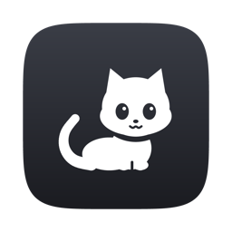

Tinyrun
Tinyrun
They run
while you focus.
집중하면 달리는
작은 친구들.
Fifteen tiny pixel friends for your menu bar and notch.
A simple Pomodoro timer, with company.
메뉴 바와 노치에 사는 픽셀 친구 15명.
친구가 함께하는 심플한 뽀모도로.
Try it — these are the real frames from the app.
직접 눌러 보세요. 앱과 똑같은 프레임이에요.
Meet the pets
캐릭터
Just enough
딱 필요한 만큼
Pomodoro, built in
뽀모도로 내장
Start, pause, skip, reset. Focus 15–90 min, break 3–20 min. Focus and break take turns on their own.
시작·일시정지·스킵·리셋. 집중 15~90분, 휴식 3~20분. 집중과 휴식이 알아서 번갈아 돌아가요.
Menu bar or notch
메뉴 바 또는 노치
Sit in the menu bar like a system icon, or ride along the left or right side of the MacBook notch.
시스템 아이콘처럼 메뉴 바에, 또는 맥북 노치의 왼쪽이나 오른쪽에 붙어 있어요.
Flip through pets
바로바로 바꿔 보기
Fifteen pets in a small grid under Pet ▸. It stays open while you click, so you can compare them live.
캐릭터 ▸ 안의 작은 격자에 15가지. 눌러도 메뉴가 닫히지 않아 바로 비교할 수 있어요.
Looks native
원래 있던 것처럼
One-color glyphs at system-icon size that follow light and dark menu bars, and the native macOS menu.
시스템 아이콘 크기의 단색 픽셀이라 밝은·어두운 메뉴 바에 맞춰지고, 메뉴도 macOS 기본 메뉴예요.
Nothing else
그 외엔 없음
No account, no ads, no streaks, no network, no permissions. About 3 MB, universal.
계정·광고·스트릭·네트워크·권한 요청 모두 없음. 약 3MB, 유니버설.
Light on your Mac
가벼워요
macOS plays the animation itself, so Tinyrun barely wakes up: 0% CPU while idle, under 1% while the timer runs.
애니메이션은 macOS가 직접 재생해서 앱이 거의 깨지 않아요. 대기 중 CPU 0%, 타이머가 돌 때도 1% 미만.
How to use
사용법
- Click the pet in the menu bar (or next to the notch) to open the menu.
- Choose Start. The pet runs while you focus and naps on the break.
- Pick a pet, the focus and break lengths, and where it lives from the same menu.
- Hold ⌘ and drag to move the menu bar icon.
- 메뉴 바(또는 노치 옆)의 펫을 누르면 메뉴가 열려요.
- 시작을 누르면 집중하는 동안 달리고, 휴식 때는 잠들어요.
- 같은 메뉴에서 캐릭터, 집중·휴식 시간, 표시 위치를 고를 수 있어요.
- ⌘를 누른 채 드래그하면 메뉴 바 아이콘 위치를 옮길 수 있어요.